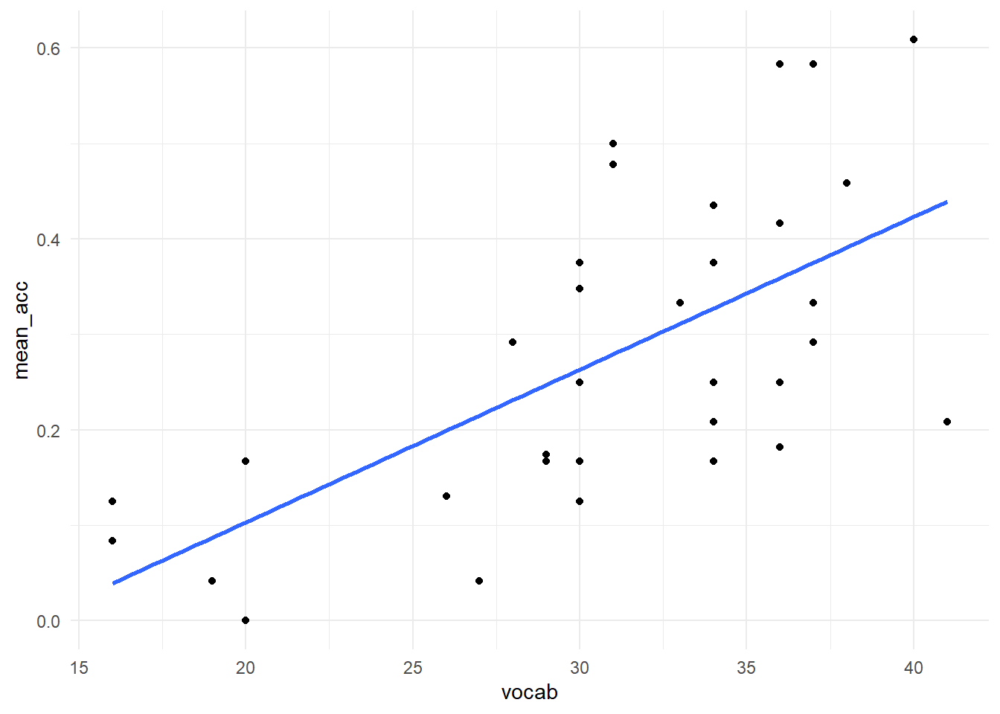
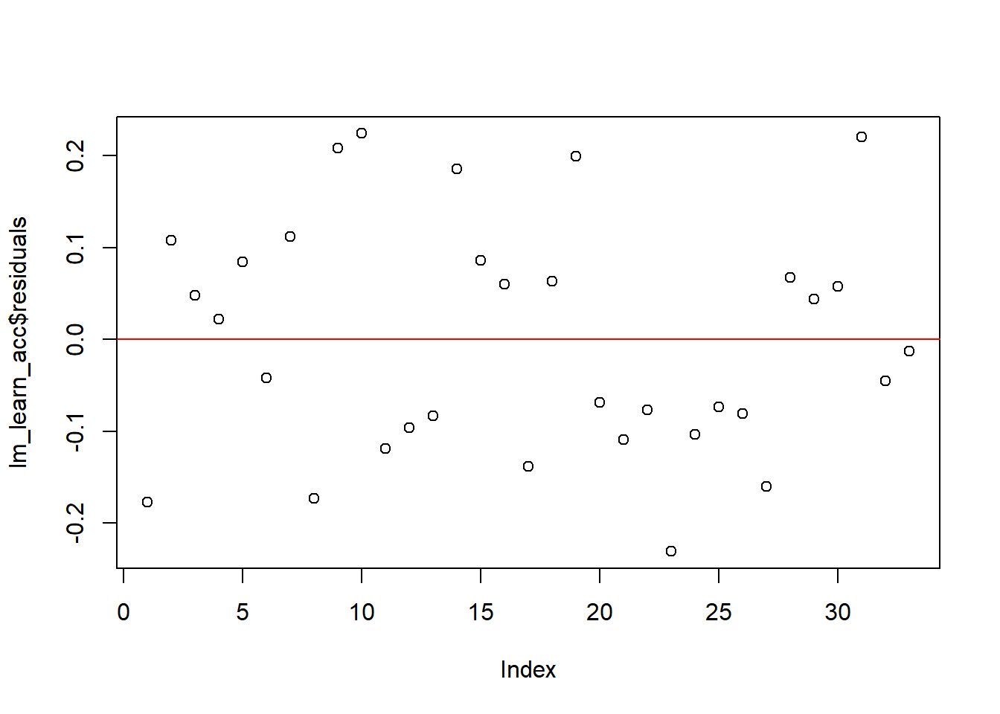
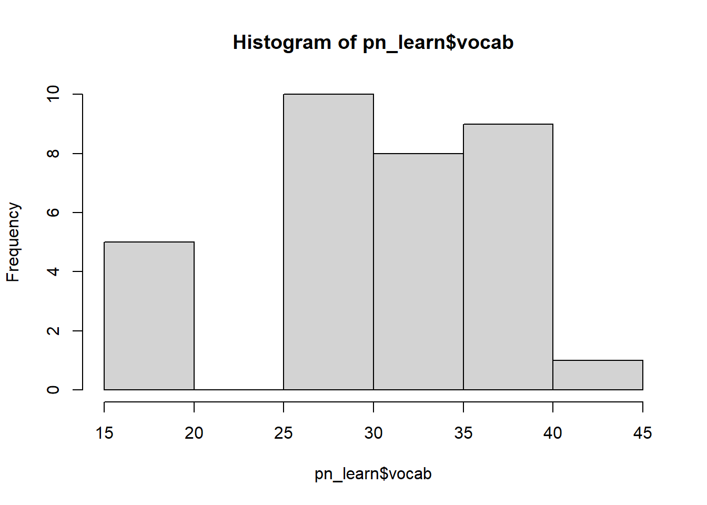
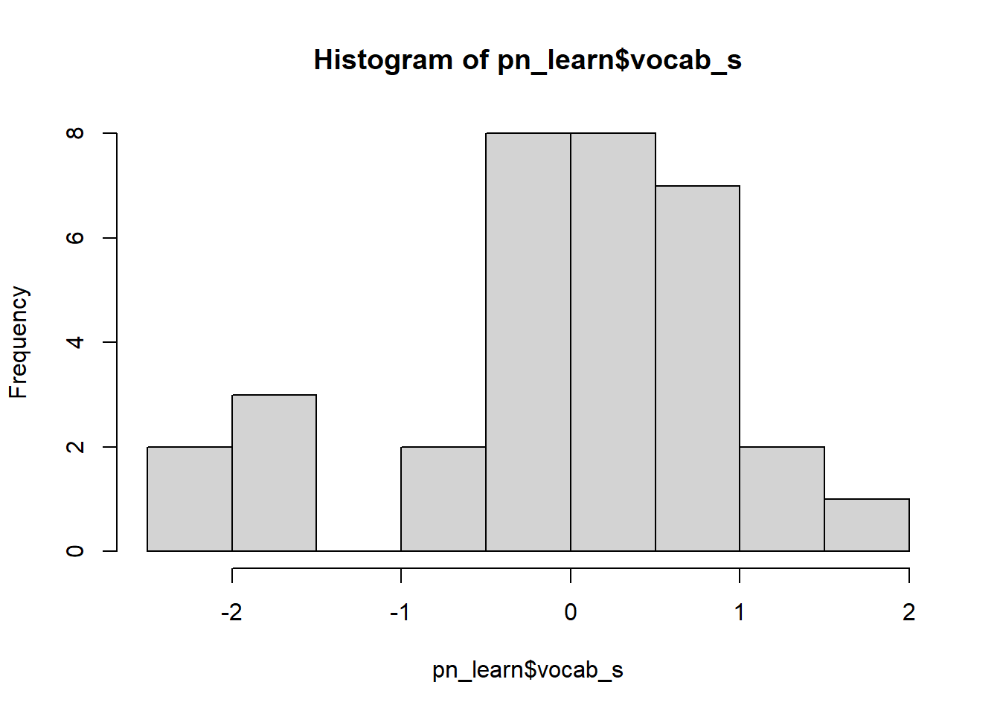

Work in progress!
lm() functionNote that this is not designed to be a comprehensive statistical introduction, but a practical guide to fitting regression models in R.
We will be working with data collected from a study of sleep and word learning in children (James, Gaskell, & Henderson, 2020. The experiment involved teaching children the names of unusual plants/animals, and testing their memory for them after periods of wake and sleep. For this lesson, we will analyse the data from the picture naming task, in which children were asked to name pictures of the items as quickly as they could. We will focus on data from the first two test sessions only (12-hour period containing wake or sleep).
As during the first part of the workshop, we will read in the data and format it using the tools from the tidyverse. Make sure you have the package loaded.
library(tidyverse)We can import the datafile directly from github by giving read_csv() the url to the raw content. Assign it to a dataframe called pn_long:
pn_long <- read_csv("https://raw.githubusercontent.com/emljames/YSJ_R_workshop/master/data/AMPM_subset.csv")## Parsed with column specification:
## cols(
## ID = col_character(),
## vocab = col_double(),
## sleep_wake = col_character(),
## session = col_double(),
## item = col_character(),
## acc = col_double(),
## RT = col_double()
## )Let’s see what it looks like:
head(pn_long)## # A tibble: 6 x 7
## ID vocab sleep_wake session item acc RT
## <chr> <dbl> <chr> <dbl> <chr> <dbl> <dbl>
## 1 AmPm0cde 33 sleep 1 agouti 1 2167.
## 2 AmPm0cde 33 wake 1 banyan 1 1502.
## 3 AmPm0cde 33 wake 1 baobab 1 863.
## 4 AmPm0cde 33 sleep 1 blenny 0 NA
## 5 AmPm0cde 33 wake 1 caracal 1 873.
## 6 AmPm0cde 33 wake 1 deglupta 0 NAAt the moment, this data is in long form: we have one row per trial per participant. Let’s work out how many pictures each participant (ID) could name for each condition (sleep_wake, session). We’ll also compute their mean response time.
pn_id <- pn_long %>% # create pn_id dataframe from pn_long dataset
group_by(ID, vocab, sleep_wake, session) %>% # produce output for each sleep_wake/session condition
summarise(mean_acc = mean(acc, na.rm = TRUE), mean_RT = mean(RT, na.rm = TRUE)) # compute mean accuracy and mean response timeThe variable vocab was redundant in the above grouping (as no participant will have more than one value listed), but listing it is a helpful way of retaining it in the summarised dataset. Also note that we have specified na.rm = TRUE when computing an average response time: this variable has lots of missing data as we are only interested in response times for those pictures that were named correctly.
The data now look a little more like the data we work with in traditional ANOVA analyses. However, we still have multiple rows per participant. We’re interested in change in performance across the 12-hour period (between session 1 and session 2). To work this out, let’s use the pivot_wider() tool we learned about earlier in the workshop, along with mutate() to create a new variable.
pn_wide <- pn_long %>% # create pn_wide dataframe from pn_long dataset
group_by(ID, vocab, sleep_wake, session) %>% # produce output for each sleep_wake/session condition
summarise(mean_acc = mean(acc, na.rm = TRUE), mean_RT = mean(RT, na.rm = TRUE)) %>% # compute mean accuracy and mean response time
pivot_wider(names_from = session, values_from = c(mean_acc, mean_RT)) %>% # re-organise data to have one test session per column
mutate(change_acc = mean_acc_2 - mean_acc_1, # compute change in acc between the two sessions
change_RT = mean_RT_2 - mean_RT_1) # compute change in RT between the two sessions## `summarise()` regrouping output by 'ID', 'vocab', 'sleep_wake' (override with `.groups` argument)pn_learn) that computes the averages (mean_acc, mean_RT) for the first session only, regardless of learning time. You will want to use the filter() function. Make sure to keep in the ID and vocab data!pn_id dataframe to work out the mean performance in each combination of conditions (sleep vs. wake, session 1 vs. 2).pn_id or pn_learn dataframe to work out some descriptive statistics for the first test session (regardless of sleep_wake condition). What was the mean number of pictures named? What was the standard deviation?# Q1
pn_learn <- pn_long %>%
filter(session == 1) %>%
group_by(ID, vocab) %>%
summarise(mean_acc = mean(acc, na.rm = TRUE), mean_RT = mean(RT, na.rm = TRUE))
# Q2
pn_id %>%
group_by(sleep_wake, session) %>%
summarise(group_acc = mean(mean_acc, na.rm = TRUE), group_RT = mean(mean_RT, na.rm = TRUE))
# Q3 - using pn_id - note might need to ungroup!
pn_id %>%
filter(session == 1) %>%
ungroup() %>%
summarise(group_acc = mean(mean_acc, na.rm = TRUE), sd_acc = sd(mean_acc, na.rm = TRUE))
# Q3 - using pn_learn
mean(pn_learn$mean_acc)
sd(pn_learn$mean_acc)Linear regression is used to model the relationship between one/more predictor variables and a continuous outcome measure (interval/ratio data). Note that although we talk about predictors and outcomes, the relationship is not necessarily causal.
The model fits a single regression line that describes how the outcome measure changes in response to changes in the predictor variable(s). This line is described by two important components (coefficients):
The fitted line will not predict each data point exactly - there will always be some error in the model that we have not accounted for in any given analysis. The differences between our observed data points and the fitted line are called residuals.
As always, we should bear in mind that parametric statistics require a number of assumptions to be met. We are not covering these in great detail today, but a few that we should note for now:
Linear regression models can be fitted using R’s own statistical package, so we don’t need to load any other kind of tools.
Let’s fit simple linear regression using the sleep study data. A good predictor of children’s word learning score might be their vocabulary ability - we would expect that children who already know more words will be better at learning the new ones. Let’s look at the dataframe we created from the first test session only (pn_learn) to test this.
pn_learn <- pn_long %>%
filter(session == 1) %>%
group_by(ID, vocab) %>%
summarise(mean_acc = mean(acc, na.rm = TRUE), mean_RT = mean(RT, na.rm = TRUE))## `summarise()` regrouping output by 'ID' (override with `.groups` argument)When we run an analysis in R (particularly more complex models), we usually want to store the output as an object in the environment. Remember that we use the assignment operator (<-) to do this. This seems strange and a bit of a faff, but it becomes useful for being able to work with our analyses later on. It will become habit before you know it!
We use the function lm() to run a linear model. The first thing to enter is the model formula: it follows the structure of y ~ x (or outcome ~ predictor). The variables you list here need to match up to the variables (column names) in your dataset! Then we need to specify the data for it to use.
lm_learn_acc <- lm(mean_acc ~ vocab, data = pn_learn)After you have run the model, you’ll want to look at the output. We call summary() on the model object to get this:
summary(lm_learn_acc)##
## Call:
## lm(formula = mean_acc ~ vocab, data = pn_learn)
##
## Residuals:
## Min 1Q Median 3Q Max
## -0.23075 -0.09647 -0.01314 0.08469 0.22423
##
## Coefficients:
## Estimate Std. Error t value Pr(>|t|)
## (Intercept) -0.216705 0.109195 -1.985 0.0561 .
## vocab 0.015995 0.003461 4.622 6.33e-05 ***
## ---
## Signif. codes: 0 '***' 0.001 '**' 0.01 '*' 0.05 '.' 0.1 ' ' 1
##
## Residual standard error: 0.1288 on 31 degrees of freedom
## (1 observation deleted due to missingness)
## Multiple R-squared: 0.4079, Adjusted R-squared: 0.3888
## F-statistic: 21.36 on 1 and 31 DF, p-value: 6.335e-05This table summarises the model we fitted, the intercept, and the slope. The co-efficient for the vocabulary score is positive - the higher a child’s vocabulary ability, the more words they were likely to learn in the experiment. It automatically provides us with a t-statistic and p-value, so we can describe significant predictors of performance.
The bottom section also provides some useful information about the model itself. We can see that one observation could not be included due to missing data. It also provides a measure of R^2 - how much variance is described by the model. We can see that this model (containing only vocabulary ability) accounts for ~42% of variability in initial word learning. The F-statistic tells us that this is a much better model than simply using the mean word learning score.
There we have it, we have already run our first analysis in R! Let’s plot the data using the ggplot2 tools we learned earlier. We can also ask ggplot for a regression line.
ggplot(pn_learn, aes(x = vocab, y = mean_acc)) +
geom_point() +
geom_smooth(method = "lm", se = FALSE, fullrange = TRUE) +
#scale_x_continuous(limits = c(0, 45)) + # uncomment these lines to see the intercept!
#scale_y_continuous(limits = c(-0.23,1)) + # uncomment these lines to see the intercept!
theme_minimal()## `geom_smooth()` using formula 'y ~ x'## Warning: Removed 1 rows containing non-finite values (stat_smooth).## Warning: Removed 1 rows containing missing values (geom_point).
As mentioned above, it’s important to check that the assumptions of linear regression are met. Unlike SPSS, R won’t necessarily produce a warning for you if things look dodgy: we need to ask it.
As an example, let’s check whether the residuals of the model are normally distributed. We can produce a quick figure to inspect this, by calling plot() on the model object:
plot(lm_learn_acc$residuals) +
abline(h = 0, col = "red") # residuals should be distributed around 0
## integer(0)We also added a red line to mark zero.
You can do a lot with the statistics tools within R, and there are lots of tutorials online to demonstrate how to go about inspecting model fit. You might want to Google this, find some plots that are intuitive and easy for you to understand, and copy their procedure. I particularly like this tutorial, as it produces some basic plots and explains clearly what to look for.
Fit a similar model, lm_learn_RT to examine the relationship between vocabulary ability and response time:
lm_learn_RT <- lm(mean_RT ~ vocab, data = pn_learn)
summary(lm_learn_RT)
plot(lm_learn_RT$residuals)+
abline(h = 0, col = "red")Using the raw vocabulary score as a predictor of performance made it easy to interpret the model in the same units (i.e., each point scored during the test). However, once we have multiple predictors in a model, it can be more informative to ensure that they are on the same scale. Standardising predictors can also help to reduce issues of multi-collinearity, especially once interaction terms are introduced into the model.
Luckily, it’s very easy to do this in R. Standardising involves two steps. First, it centres the variable: we substract the mean from each value, so that the mean is 0 and surrounding data points are positive or negative relative to the mean. Second, we divide the centered variable by the standard deviation, creating a z-score. The scale() function handles both of these processes - let’s use it to create our standardised vocabulary score vocab_s.
pn_learn$vocab_s <- scale(pn_learn$vocab, center = TRUE, scale = TRUE)If we inspect the raw and transformed variables, we can now see that the standardised version is centred on 0.
hist(pn_learn$vocab)
hist(pn_learn$vocab_s) We can also check that the standardised version has a standard deviation of 1:
sd(pn_learn$vocab, na.rm = TRUE)## [1] 6.580072sd(pn_learn$vocab_s, na.rm = TRUE)## [1] 1Let’s compare the outputs of the linear models fitted with the two versions:
# Original model using raw vocabulary score
summary(lm_learn_acc)##
## Call:
## lm(formula = mean_acc ~ vocab, data = pn_learn)
##
## Residuals:
## Min 1Q Median 3Q Max
## -0.23075 -0.09647 -0.01314 0.08469 0.22423
##
## Coefficients:
## Estimate Std. Error t value Pr(>|t|)
## (Intercept) -0.216705 0.109195 -1.985 0.0561 .
## vocab 0.015995 0.003461 4.622 6.33e-05 ***
## ---
## Signif. codes: 0 '***' 0.001 '**' 0.01 '*' 0.05 '.' 0.1 ' ' 1
##
## Residual standard error: 0.1288 on 31 degrees of freedom
## (1 observation deleted due to missingness)
## Multiple R-squared: 0.4079, Adjusted R-squared: 0.3888
## F-statistic: 21.36 on 1 and 31 DF, p-value: 6.335e-05# New model using standardised vocabulary score
lm_learn_acc_s <- lm(mean_acc ~ vocab_s, data = pn_learn)
summary(lm_learn_acc_s)##
## Call:
## lm(formula = mean_acc ~ vocab_s, data = pn_learn)
##
## Residuals:
## Min 1Q Median 3Q Max
## -0.23075 -0.09647 -0.01314 0.08469 0.22423
##
## Coefficients:
## Estimate Std. Error t value Pr(>|t|)
## (Intercept) 0.27719 0.02243 12.361 1.62e-13 ***
## vocab_s 0.10525 0.02277 4.622 6.33e-05 ***
## ---
## Signif. codes: 0 '***' 0.001 '**' 0.01 '*' 0.05 '.' 0.1 ' ' 1
##
## Residual standard error: 0.1288 on 31 degrees of freedom
## (1 observation deleted due to missingness)
## Multiple R-squared: 0.4079, Adjusted R-squared: 0.3888
## F-statistic: 21.36 on 1 and 31 DF, p-value: 6.335e-05We can see that this doesn’t change whether or not vocabulary is a significant predictor of performance, but it does change the values of the intercept and the slope. This can be important for running and interpreting more complex models, but you’ll need to think carefully about the implications of this for your own types of statistical analysis.
Psychologists often design their experiments to compare performance across two/more experimental conditions. For example, in our AM-PM dataset, we want to compare performance between the sleep and wake conditions (the sleep_wake variable). We want to test whether sleep vs. wake leads to greater change in performance between the two test sessions.
Realistically, this isn’t how we would analyse these data – we still have repeated measures for each condition here that’s not accounted for by the model. But this is where mixed effects will come in handy shortly!
We want to use our categorical predictor (sleep_wake) predict change in performance across the 12-hour period. There are different ways of entering categorical predictors into your model, and how you decide to specify the comparisons (termed contrasts) will depend on your research question.
By default, R will use “treatment coding” for categorical predictors. It will automatically assign one level of your factor as a “reference” level (dummy coded to 0) and the others as treatment levels (coded as 1). For example, someone in medical research might have a control group for reference (0) and want to look at the effect of a particular treatment (1).
Let’s see what it’s done with our pn_wide data. First, we make sure it’s interpreting our categorical predictor as a factor. Then we can ask R what it’s already thinking about how it should be coded.
pn_wide$sleep_wake <- as.factor(pn_wide$sleep_wake)
contrasts(pn_wide$sleep_wake)## wake
## sleep 0
## wake 1For our sleep_wake condition, it’s treating the “sleep” condition as the baseline level, and “wake” as treatment. It’s automatically assigned this way because “sleep” appears first in the alphabet, which probably isn’t that helpful in the majority of situations. I want to consider “wake” as the baseline, so we can change this reference level using the relevel() function.
pn_wide$sleep_wake <- factor(pn_wide$sleep_wake, levels = c("wake", "sleep"))
contrasts(pn_wide$sleep_wake)## sleep
## wake 0
## sleep 1Let’s have a look what these would look like in our model.
lm_acc_conds <- lm(change_acc ~ sleep_wake, data = pn_wide)
summary(lm_acc_conds)##
## Call:
## lm(formula = change_acc ~ sleep_wake, data = pn_wide)
##
## Residuals:
## Min 1Q Median 3Q Max
## -0.29982 -0.05414 -0.04982 0.04434 0.40798
##
## Coefficients:
## Estimate Std. Error t value Pr(>|t|)
## (Intercept) -0.03352 0.02232 -1.502 0.138
## sleep_wakesleep 0.17099 0.03133 5.458 8.06e-07 ***
## ---
## Signif. codes: 0 '***' 0.001 '**' 0.01 '*' 0.05 '.' 0.1 ' ' 1
##
## Residual standard error: 0.1282 on 65 degrees of freedom
## (1 observation deleted due to missingness)
## Multiple R-squared: 0.3143, Adjusted R-squared: 0.3038
## F-statistic: 29.8 on 1 and 65 DF, p-value: 8.056e-07However, as with the continuous variable, we might prefer the predictor to be centred, such that the intercept reflects mean performance across the two conditions. Again, this is particularly important once you have interactions between multiple factors in your model. Here, we use sum coding to ensure our contrasts sum to zero. Rather than using 0s and 1s, we use -1 and +1 so that the intercept (when x = 0) reflects the grand mean.
contrasts(pn_wide$sleep_wake) <- c(-1, 1)
contrasts(pn_wide$sleep_wake)## [,1]
## wake -1
## sleep 1R has some contrasts built in, and these can be really useful. For example, instead of manually specifying c(-1, 1) above, we could have used contr.sum(2). Manual editing was a quick way for me to assign the levels in an order that was intuitive to me, but it really makes very little difference.
lm_acc_conds_sc <- lm(change_acc ~ sleep_wake, data = pn_wide)
summary(lm_acc_conds_sc)##
## Call:
## lm(formula = change_acc ~ sleep_wake, data = pn_wide)
##
## Residuals:
## Min 1Q Median 3Q Max
## -0.29982 -0.05414 -0.04982 0.04434 0.40798
##
## Coefficients:
## Estimate Std. Error t value Pr(>|t|)
## (Intercept) 0.05198 0.01566 3.319 0.00149 **
## sleep_wake1 0.08550 0.01566 5.458 8.06e-07 ***
## ---
## Signif. codes: 0 '***' 0.001 '**' 0.01 '*' 0.05 '.' 0.1 ' ' 1
##
## Residual standard error: 0.1282 on 65 degrees of freedom
## (1 observation deleted due to missingness)
## Multiple R-squared: 0.3143, Adjusted R-squared: 0.3038
## F-statistic: 29.8 on 1 and 65 DF, p-value: 8.056e-07The intercept has now change because it reflects average performance change rather than performance change for the wake condition. Similarly, the coefficient for sleep condition now reflects this new difference. However, the t-statistic and p-value reassuringly stays the same.
We have kept things simple for today with only two levels of categorical variable. However, often we have three/more conditions that we want to compare and this requires some more thought. Unlike in running an ANOVA, you will have to specify which comparisons you want to make (e.g., a three level variable will use two contrasts). The best coding system for the job will depend on your specific hypotheses. There are some more resources on that here:
Now we’ve formatted the predictors correctly, we can incorporate multiple predictors into the same model.
We saw earlier that vocabulary ability predicted overall learning performance. Here, we can ask whether it predicts how well participants remember those new words (the change in performance between test 1 and test 2, change_acc), and whether this is different between wake and sleep.
First, we need to standardise vocabulary score (as we only did this for the pn_learn dataframe earlier, not pn_wide)
pn_wide$vocab_s <- scale(pn_wide$vocab, center = TRUE, scale = TRUE)Then adding the interaction term is very simple: we change the + in the formula to a *. Using the * incorporates both main effects separately, and the interaction between them.
lm_acc_conds_vocab <- lm(change_acc ~ sleep_wake * vocab_s, data = pn_wide)
summary(lm_acc_conds_vocab)##
## Call:
## lm(formula = change_acc ~ sleep_wake * vocab_s, data = pn_wide)
##
## Residuals:
## Min 1Q Median 3Q Max
## -0.26395 -0.06632 -0.02744 0.05589 0.40940
##
## Coefficients:
## Estimate Std. Error t value Pr(>|t|)
## (Intercept) 0.05218 0.01600 3.262 0.00181 **
## sleep_wake1 0.08670 0.01600 5.421 1.07e-06 ***
## vocab_s -0.01366 0.01674 -0.816 0.41758
## sleep_wake1:vocab_s 0.02353 0.01674 1.406 0.16493
## ---
## Signif. codes: 0 '***' 0.001 '**' 0.01 '*' 0.05 '.' 0.1 ' ' 1
##
## Residual standard error: 0.1288 on 61 degrees of freedom
## (3 observations deleted due to missingness)
## Multiple R-squared: 0.3499, Adjusted R-squared: 0.3179
## F-statistic: 10.94 on 3 and 61 DF, p-value: 7.582e-06Note that in the output, the interaction term is referred to as : - we also could have used this in our formula to specify the interaction, but we used * as shorthand for incorporating both the main effects and the interaction.
lm_RT_conds) using sleep_wake as a predictor of change in response time over the 12-hour period (change_RT). Do people speed up over sleep? What can you conclude from the results?lm_RT_conds_full) to the response time data, using sleep_wake and the centred vocabulary score as a predictor. Does vocabulary predict change in naming time?# Question 1 - sleep/wake condition
lm_RT_conds <- lm(change_RT ~ sleep_wake, data = pn_wide)
summary(lm_RT_conds)
# Question 2 - full model with vocab
lm_RT_conds_vocab <- lm(change_RT ~ sleep_wake*vocab_s, data = pn_wide)
summary(lm_RT_conds_vocab)